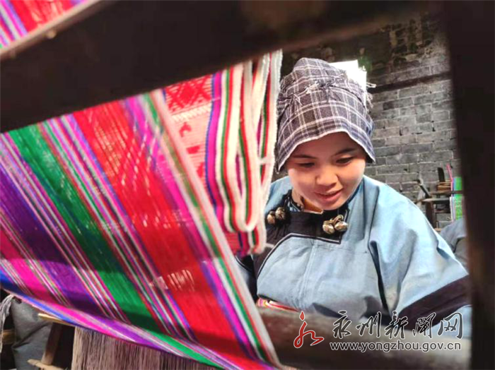
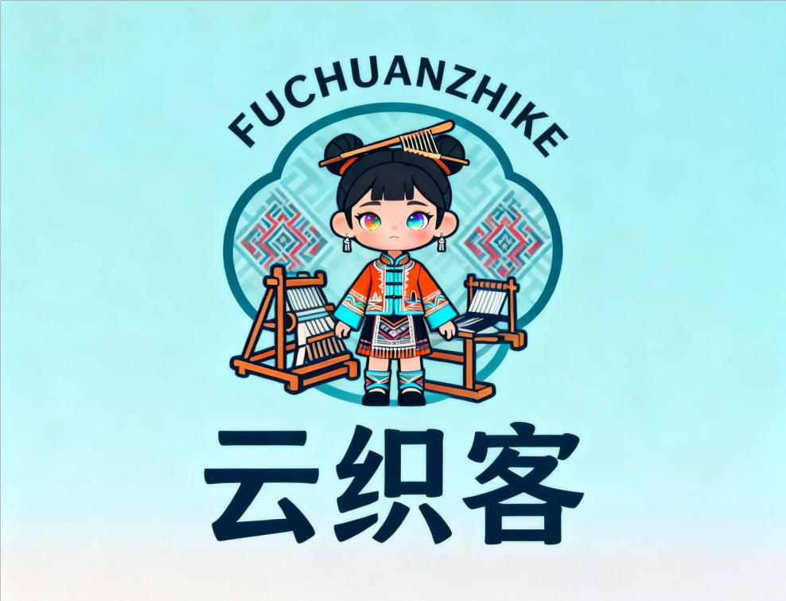
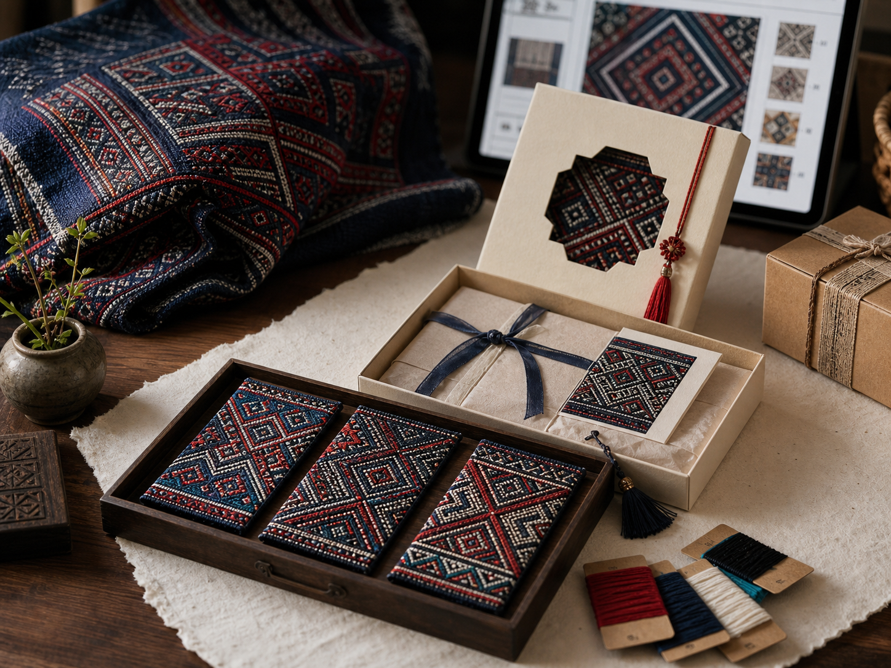
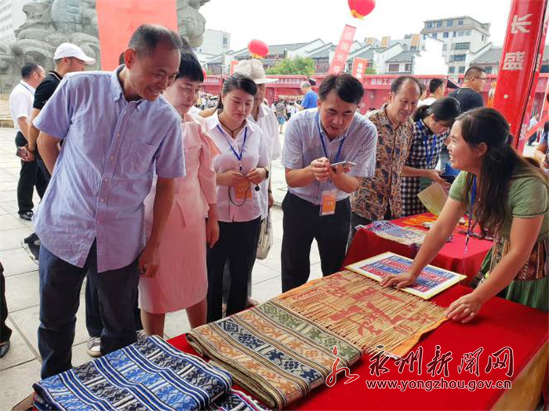
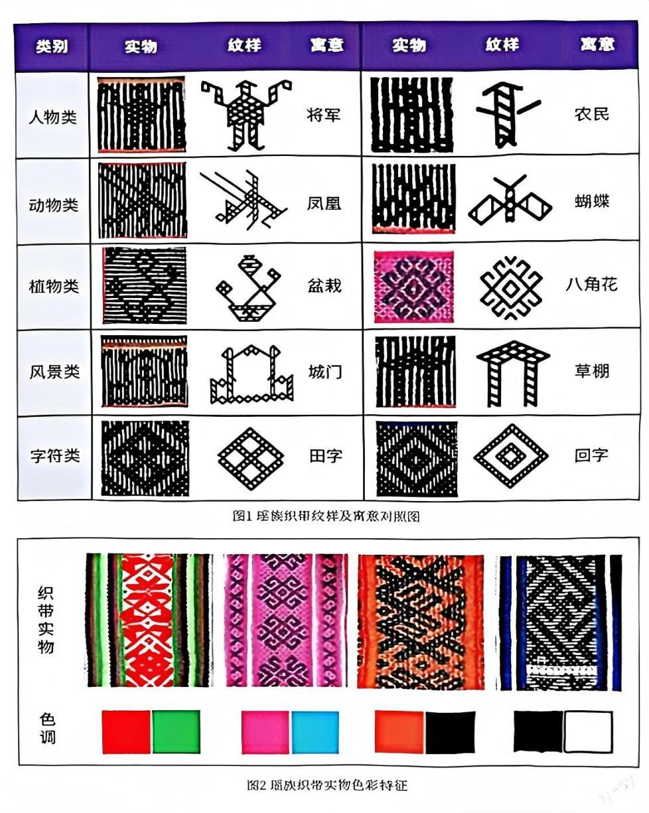

真实
以江华瑶族织锦、八宝被制作技艺与团队资料中的纹样图谱为基础，先讲清楚文化来源，再做数字化定制。

云织客非遗数字定制 预约体验
以江华瑶族织锦、八宝被制作技艺与团队资料中的纹样图谱为基础，先讲清楚文化来源，再做数字化定制。

把瑶锦从“纪念品”升级为有设计感的礼盒、手账、挂画、香囊和家居装饰，让非遗进入现代生活场景。

线上有 DIY 和预约，线下有迷你织机体验、研学课程和展会转化，让顾客参与一部分创作过程。
CULTURAL ARCHIVE

团队资料中整理了人物类、动物类、植物类、风景类、字符类等纹样线索，例如将军、凤凰、盆栽、城门、田字、农民、蝴蝶、八角花、草棚、回字等。云织客把这些图案转译为顾客更容易理解的寓意标签：守护、纳福、丰收、团圆、纪念。
因此，网站中的 DIY 不是随意生成图形，而是先从真实纹样母题出发，再做色线、尺寸和用途的现代化选择。这样既能让顾客参与设计，也避免把非遗符号做成没有来源的装饰。
CRAFT STORY
江华、永州公开资料中提到，瑶族八宝被花纹可由文字、几何、植物、动物等图纹构成，并承载不同寓意。云织客希望把这种“图纹有义”的特点保留下来：顾客看到的不只是产品图，而是每件作品的纹样、寓意、织娘与交付过程。
选纹样
配色线
见织娘
等发货
带故事